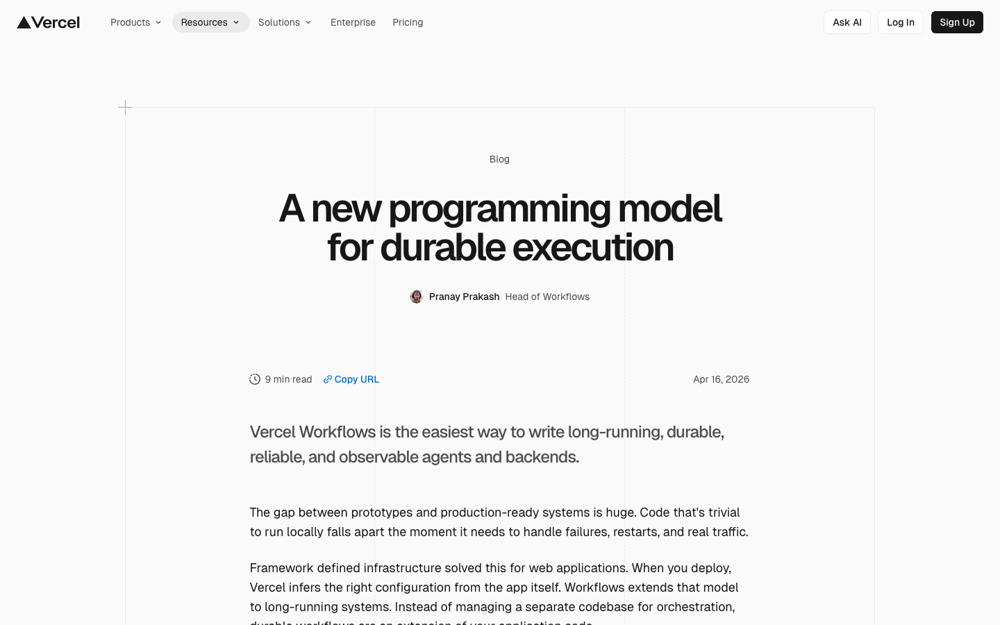
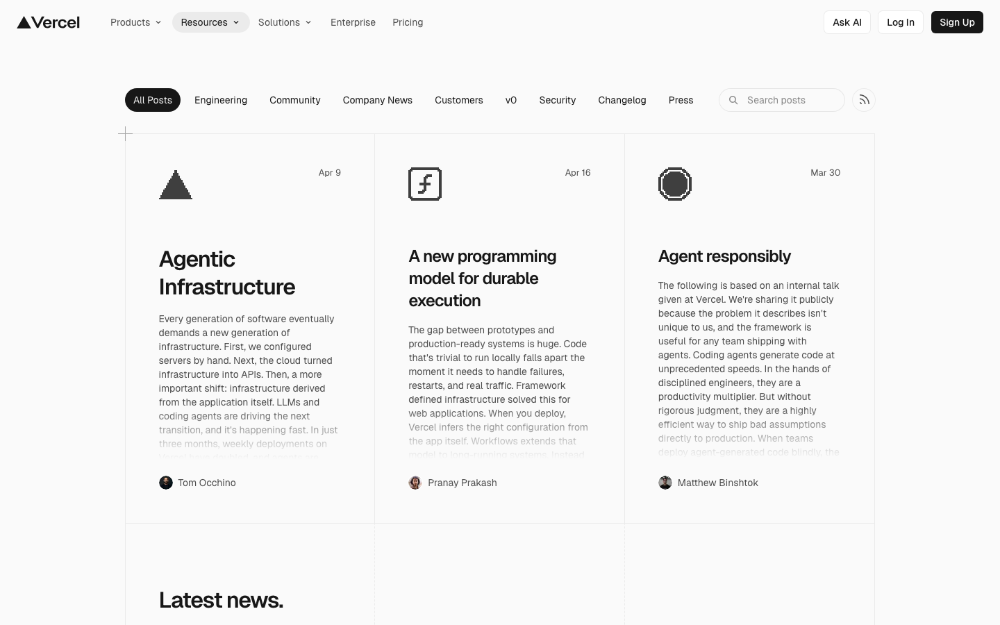
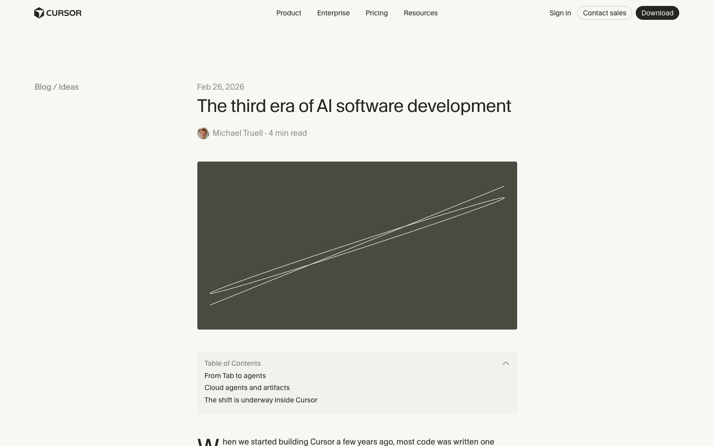
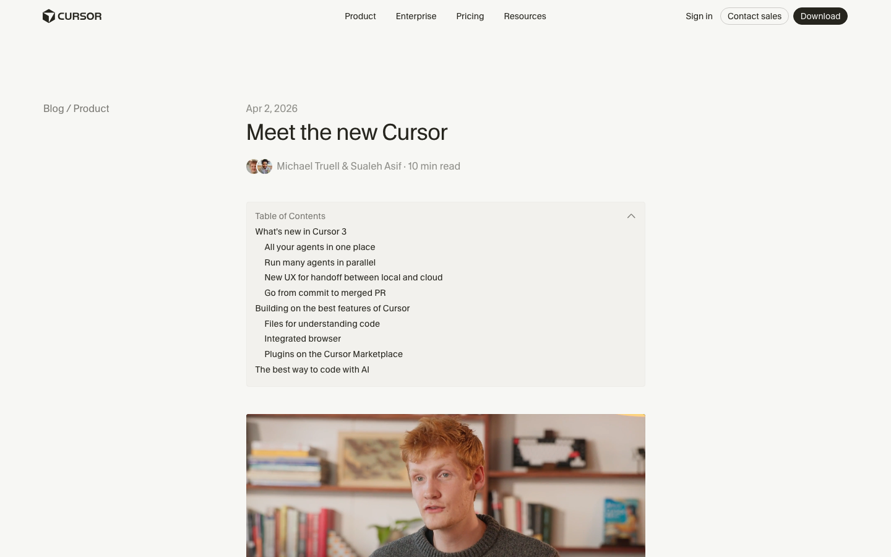
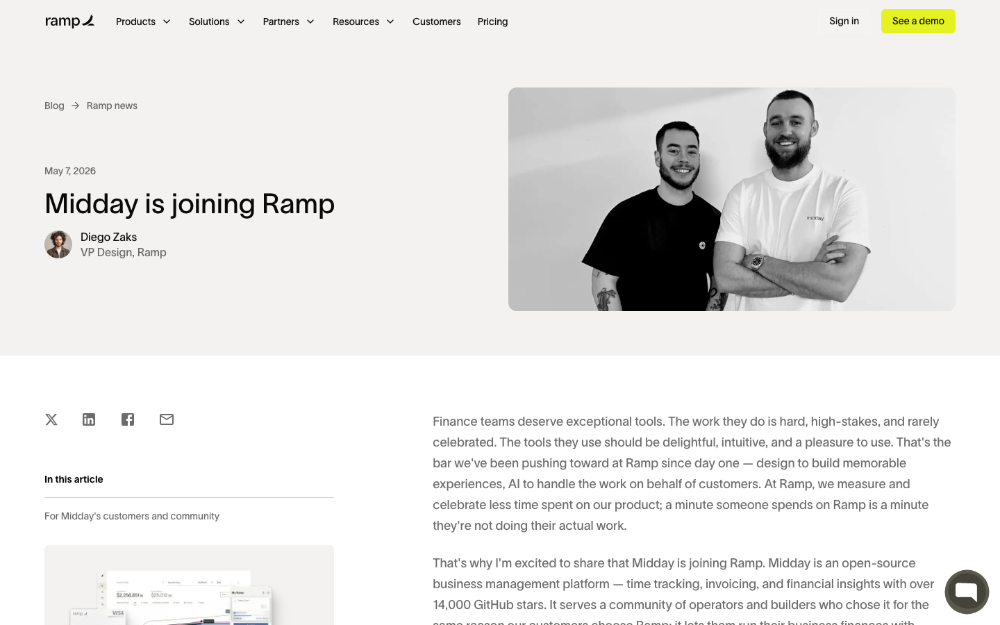
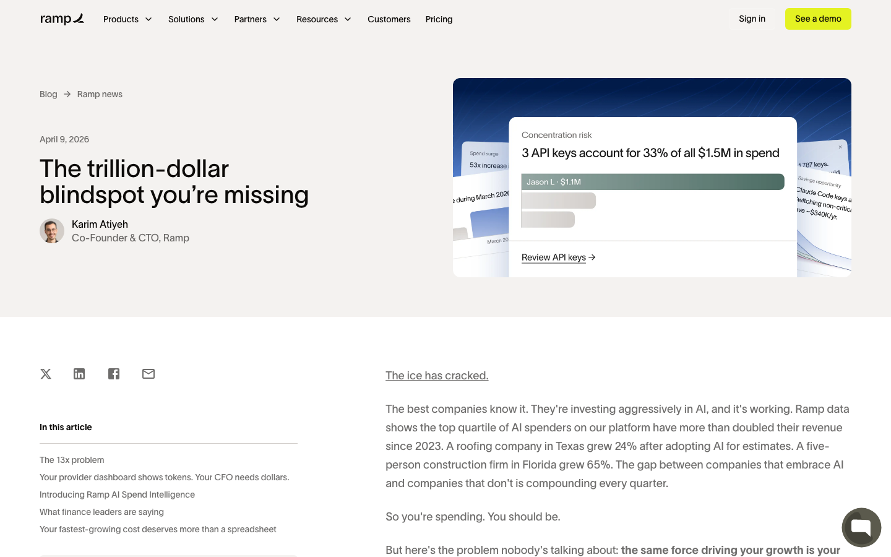
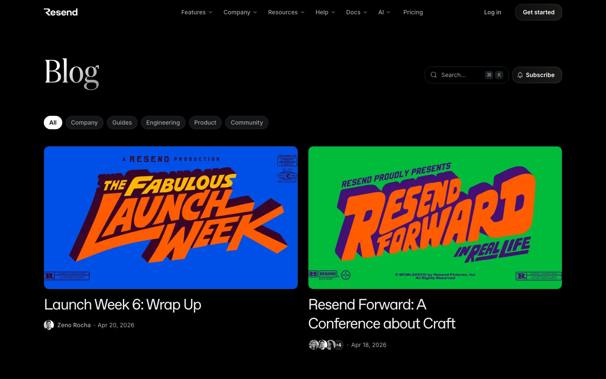
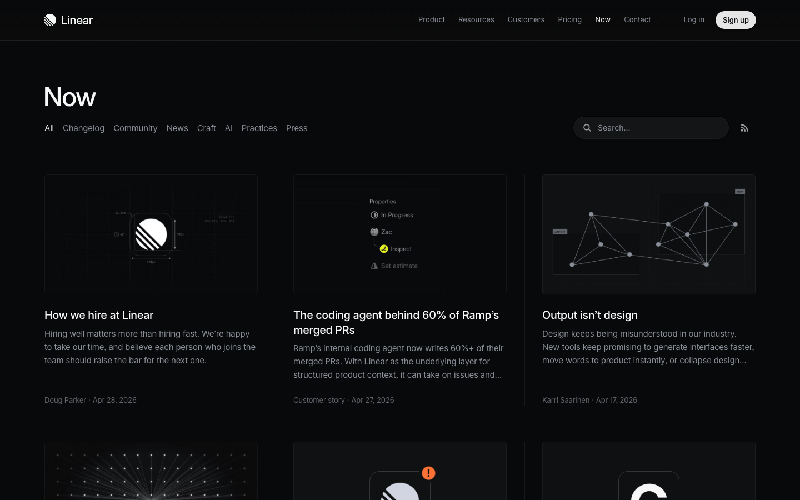
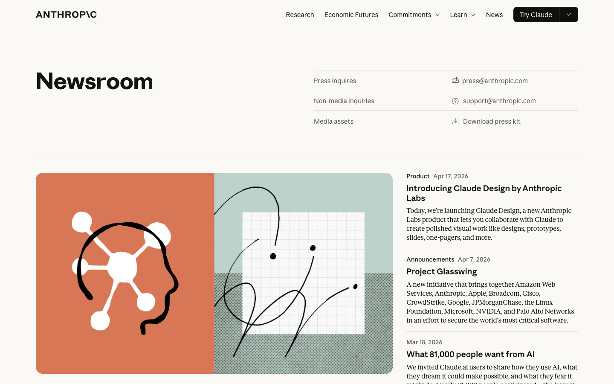
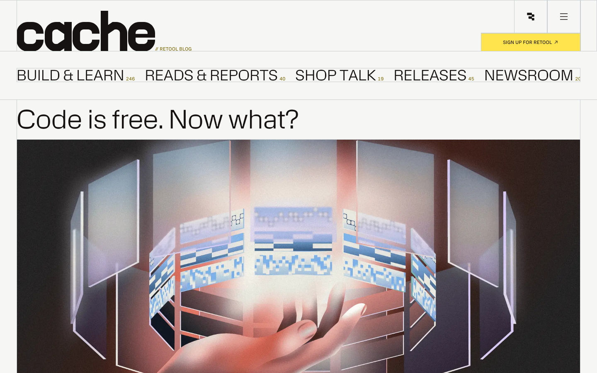

Research
Goal: decide what (if anything) goes above the title on a Highlight blog post, with a specific recommendation for the new "How to build agentic chat with Durable Objects" post.
Method: 14 above-the-fold screenshots from 7 SaaS blogs.
After looking at the captures, every SaaS blog post falls into one of two approaches:
Used by: Vercel (every post), Cursor's text-heavy posts.
The post opens with: huge bold title → author byline → straight into copy. On the index, posts get a small monogram glyph (triangle for product, {f} for engineering, octagon for press).


Why it works: signals "this is a serious piece of writing". No image-sourcing tax. Index page gets visual rhythm from glyphs, not full art.
Used by: Cursor essays, Ramp, Retool/cache, Resend, Linear, Anthropic.
| Style | Examples | When it fits |
|---|---|---|
| Abstract photo / texture | Cursor "third era" | thought-leadership essays, no obvious subject |
| Product UI mock (small/dark) | Linear "Now" cards | product launches, changelog entries |
| Photo of person/team | Cursor 3, Ramp midday | announcements, profiles, customer stories |
| Bold typography poster | Resend launch-week | brand moments, launches |
| Hand-drawn illustration | Anthropic newsroom | research, technical-meets-human |
| Magazine illustration | Retool "Code is free" | provocative essays, opinion |








For Highlight's blog (clean, light, sans, narrow column), the strongest fits are:
What to avoid:
Default policy: Camp A (no hero image), with the option to add one when a specific post earns it.
Most posts go up faster. Engineering posts especially don't need art at the top. The "what if the image is bad" worry disappears.
When to add a hero image:
If we do add an image, default to one of two styles:
The post is a technical deep-dive with code, a diagram, and an architectural narrative. Closest analog in the wild: Vercel's "A new programming model for durable execution" (also durable-execution-themed, also tech-heavy) — and Vercel uses no hero image at all. Just title → author → text.
That's the strongest signal: for this exact category of post, no image is the industry default and it works.
Just title + author + read time + straight into the post. Already supported by our current BlogPostImage component returning null when there's no coverImage in frontmatter. The post is already wired this way — leave it.
Why this wins: matches Vercel exactly, ships immediately, looks confident. The architecture diagram referenced in the post becomes the first image users see, in-context, which is more useful than a decorative cover.
Take the existing structure diagram the post already references (currently a TODO placeholder) and elevate it: clean it up in Figma, export at 1600×900 with generous white space, soft drop shadow, neutral palette. Frame it in a light gray card like Linear does.
Why: turns the educational asset into the cover. Doubles as the in-post diagram. No extra creative work beyond polishing what we need anyway.
Recipe: white/light-gray background → minimal node boxes (Worker, ChatObject, SQLite) → connecting lines with subtle arrows → labels in IBM Plex Sans → no shadows, no color (or a single accent on the data path).
A neutral abstract image conveying "durability" or "distributed compute" without being literal:
Why: feels most like a destination editorial site. But requires sourcing or commissioning. Post ships fine without it.
My call: ship with option 1 today, replace with option 2 once someone has a free hour in Figma. Don't block the post on imagery.